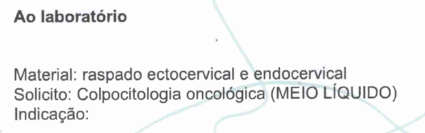
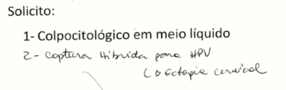
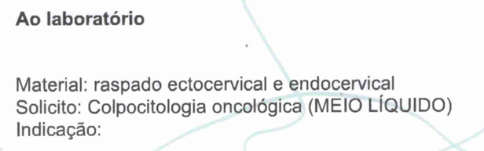
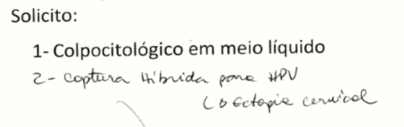

Capacitação em anatomia patológica
Qual a diferença de laboratório de análises clínica e laboratório de anatomia patológica?
Os laboratórios de análises clínicas analisam fluídos corporais, como sangue e urina. Esse tipo de exame apresenta ao médico a condição de saúde do paciente. Já os laboratório de anatomia patológica, analisam alterações estruturais, bioquímicas e funcionais nas células, tecidos e órgãos, visando explicar os mecanismos pelos quais surgem as doenças.
Que tipo de exames realizamos no laboratório de anatomia patológica?
- Análise de biópsias, orgãos e membros retirados;
- Citologia ceca e citologia líquida/meio líquido (também conhecida como preventivo ou papanicolau);
- Captura Híbrida;
- PCR Multiplex;
- Genotipagem HPV Alto Risco;
- Citologia de líquidos;
- Análise de PAAF;
- Imunohistoquímica;
- Entre outros.
Exemplos de frascos de citologias
As citologias cecas, vem em frasco de plástico transparente ou em caixinhas como essa:
Exemplos de solicitações médica de citologia
 



Apesar de terem nomenclaturas diferentes, as solicitações são tem o mesmo intuito, solicitar a análise de uma citologia.
Diferenças entre citologia de líquidos, punção aspirativa e citologia líquida
Citologia de Líquidos
É muito raro chegar este material trazido pelo paciente. Geralmente ele vem diretamente do hospital regional e 95% destes materais são:
- Lavado broncoalveolar (LBA);
- Líquido pleural (derrame pleural);
- Líquido acítico, líquido peritoneal, fundo de saco (cavidade abdominal);
- Urina.
Este tipo de material não tem tecido, é só o líquido e é muito mais comum esses materiais irem para laboratórios de análises clínicas, para pesquisa de BAAR, gram +, cultura, antibiograma...
Punção aspirativa
Este tipo de material são proveninentes de lesões
mais superficiais que podem ser puncionadas por
uma agulha fina e o material é despejado sobre
lâminas, semelhantes a citologia de colo uterino
convencional.
Os principais locais que são realizadas punções
aspirativas são:
- Tireóide (lobo direito, lobo esquerdo e istmo);
- Mama (direita e esquerda);
- Nódulos cervicais (pescoço)
- Glândulas submandibular, glândula parótida (localizadas na região de cabeça e pescoço)
- Linfonodos